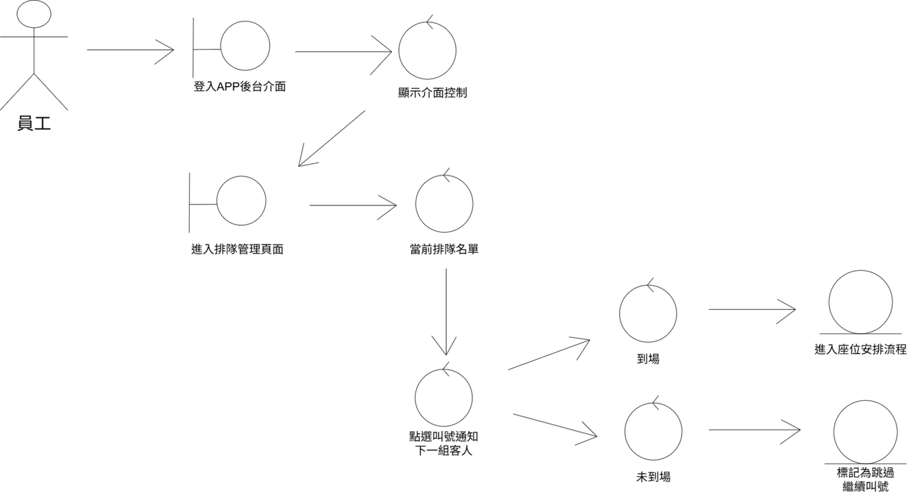
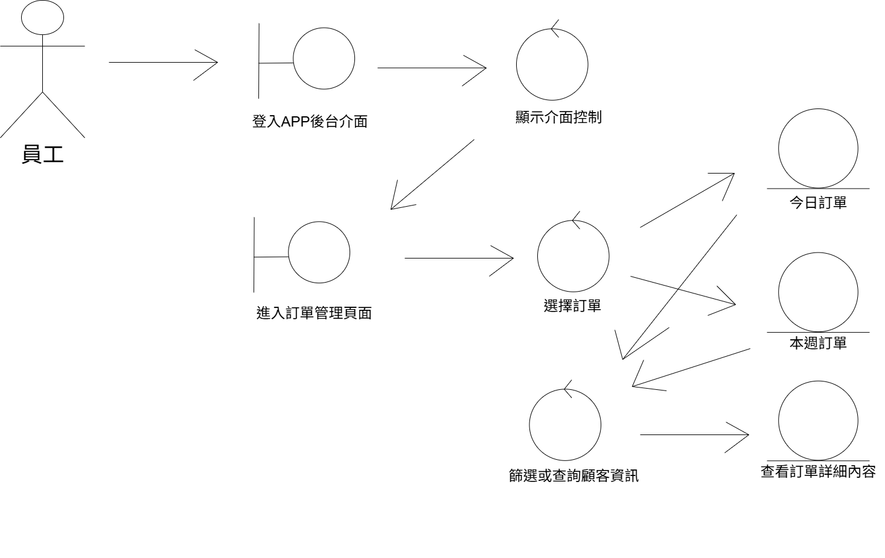

1專題目標
設計一套整合「訂位、點餐、排隊叫號、員工座位安排、報表匯出」的餐廳多功能服務系統,協助餐廳數位化日常營運流程。
- 用 use case 圖釐清顧客與員工的系統互動
- 用活動圖描繪訂單管理、排隊處理等業務流程
- 用循序圖與 CRC 卡設計物件互動與職責分配
2設計方法
採用物件導向分析設計流程,從高階的 use case 圖出發,逐步細化到活動圖、類別圖、物件圖,最終產出循序圖與元件圖驗證系統架構的可行性。
- Use Case Diagram：定義顧客／員工角色與系統邊界
- Activity Diagram：訂單管理、排隊叫號、座位安排
- Sequence / Component Diagram：App 介面與後端互動
GALLERY
系統設計圖
點擊圖片可以放大檢視



NEXT PROJECT